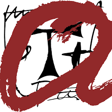
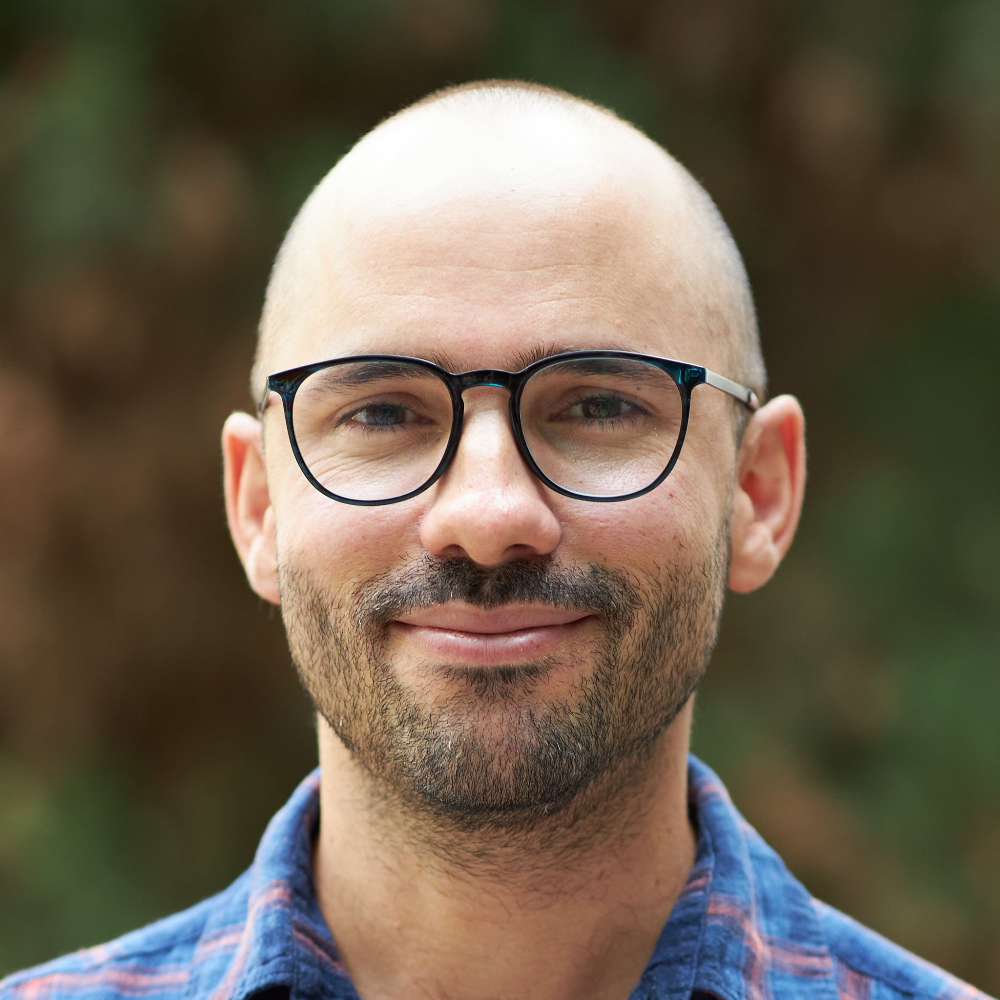

At the moment we are looking for expressions of interest from outstanding researchers who wish to work with us and are willing to jointly apply for a Marie Curie Fellowship.
For further inquiries please contact me.